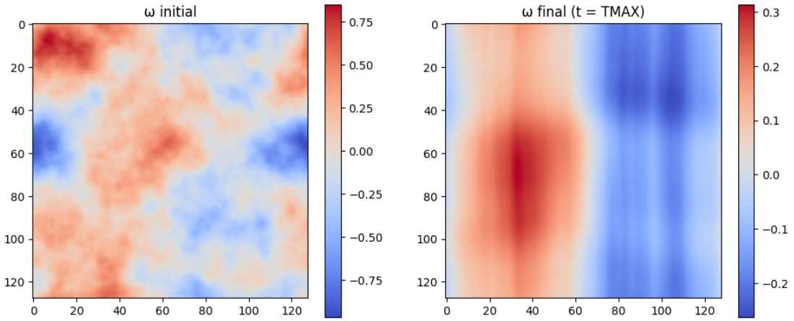
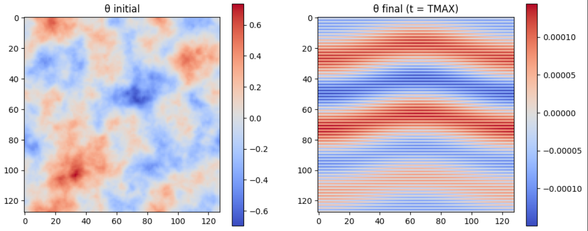
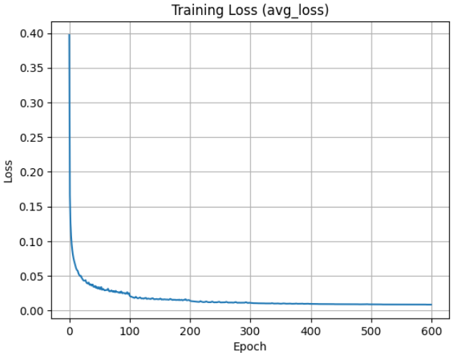
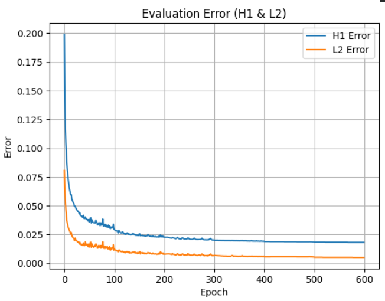

Neural Operators for Fluid Dynamics
In this project, I worked as an AI Research Intern at Central Michigan University under the supervision of Dr. Zheng. The project was funded by the NSF from May 2025 – August 2025. The work focused on scientific machine learning for modeling fluid dynamics.
We also had collaboration with researchers at the University of Notre Dame, including interactions with Dr. Wu.
My work involved researching and implementing Physics-Informed Neural Networks PINNs, DeepONets, and Neural Operators for modeling fluid dynamics systems such as the Boussinesq/Navier–Stokes equations, including coupled learning of temperature and vorticity fields.
Physics Informed Neural Networks: Velocity & Pressure
I researched the original PINN implementation by Ramjee Sharma. This work implements the model for the 2-D incompressible Navier–Stokes equations. PINNs is a deep learning approach that integrates physical laws into the training process. Instead of relying purely on data, the model learns solutions that satisfy physical equations, such as partial differential equations (PDEs). This allows the model to learn solutions consistent with the physics laws.
I extended the model by introducing and testing multiple architectural modifications to improve performance. The lowest error architecture was an hourglass-based design. This hourglass design optimized the model and resulted in a 13% reduction in prediction error. The results are visualized below.


Neural Operator: Temperature & Vorticity
I implemented a Neural Operator model to learn fluid dynamics for the incompressible 2-D Navier-Stokes Equations. The model learns the interaction between temperature and vorticity as it uses both fields during training while predicting only the vorticity channel. The full implementation is available in the following GitHub repository: View implementation
The original architecture was developed by NVIDIA. The official implementation can be found in the NeuralOperator GitHub repository,
Dataset
The mathematical theory is based on the Boussinesq system described in the following research paper: Adhikari et al. (2022) – Stability and large-time behavior for the 2D Boussinesq system , which serves as the theoretical foundation for the solver implementation.
I reimplemented and optimized a Boussinesq PDE solver from C to Python. Performance was a major bottleneck as the dataset generation was taking around 12 hours to generate. So, I introduced GPU acceleration by moving all FFT operations from CPU to GPU. I have also changed the structure of the solver to operate in a fully batched way instead of processing one simulation at a time. Lastly, I vectorized the repeated FFT calls inside loops as I placed them on stacked tensors.
As a result of these changes, I was able to achieve 8 to 32 times speedup in dataset generation, depending on the batch size and available GPU memory. The following equations present the mathematical foundation, with corresponding plots to visualize their behavior. View the dataset generation pipeline
The Navier–Stokes equations describe the evolution of fluid flow:
\[ \frac{\partial u}{\partial t} + (u \cdot \nabla) u = -\nabla p + \nu \Delta u + \theta e_2 \]
\[ \frac{\partial \theta}{\partial t} + u \cdot \nabla \theta = \eta \Delta \theta \]
In vorticity form:
\[ \frac{\partial \omega}{\partial t} + u \cdot \nabla \omega = \nu \Delta \omega + \frac{\partial \theta}{\partial x} \]
The Neural Operator learns a mapping:
\[ \mathcal{G}: (u_0, \theta_0) \rightarrow (u(t), \theta(t)) \]
Vorticity Field

Temperature Field

Model Architecture
The model processes the input by first lifting it into a higher-dimensional space, passing it through multiple Fourier layers to learn global fluid interactions, and then projecting it back to predict the vorticity field. Both temperature and vorticity are used as inputs during training, but the model is designed to predict only the vorticity field. Although temperature becomes flat and uninformative for prediction, it still plays a critical role in shaping the vorticity output.

Results & Model Performance
The model shows stable convergence during training. Loss decreased from approximately 0.40 to below 0.02. The initial decline indicates effective learning, while the later plateau suggests convergence to a stable solution.


Project Repository
The full implementation, including data generation, model training, and visualization pipelines, is available on GitHub.
This repository includes:
- High-performance PDE data generation pipeline
- Neural Operator (FNO) implementation in PyTorch
- Training and evaluation scripts
- Visualization tools for fluid dynamics simulations